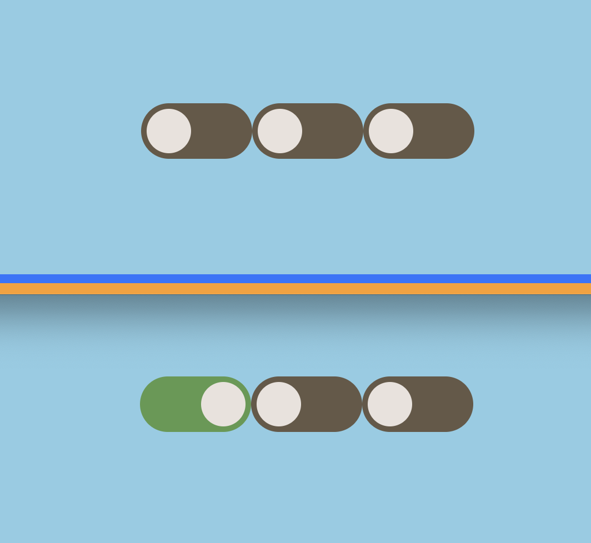
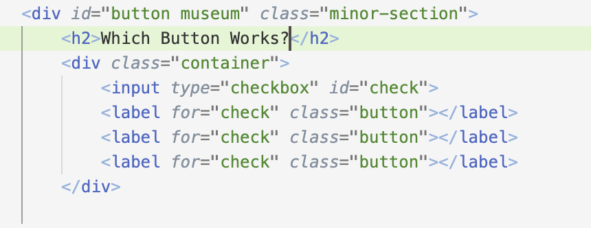
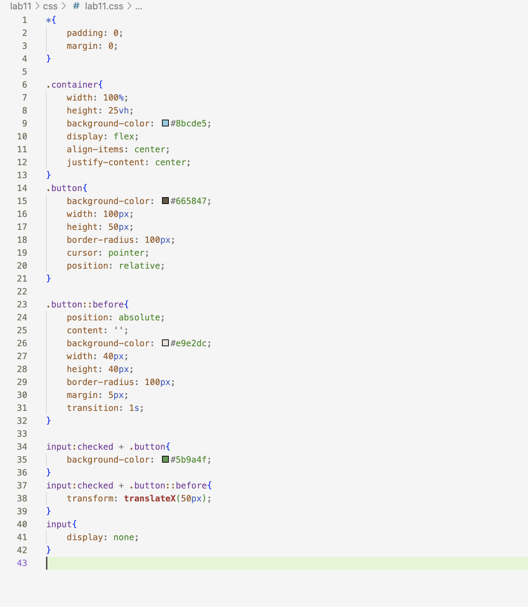

Lab 14 - Debugging Tools and Strategies
Challenge
The challenge of this lab was to debug and revisit old labs.
Problems
The main issue I had with this lab was not having anything to debug, so I went back and completed a Task X
Reflection
This lab was not difficult content wise, it was just difficult thinking of what to do for it. As there was no debugging, I looked for outsourcing materials, and ended up following a yotube tutorial on how to crate a toggle button to change up my website for lab 11.
Results
This is my code for my toggle button in Lab 11, as well as the button itself!
   homepage!